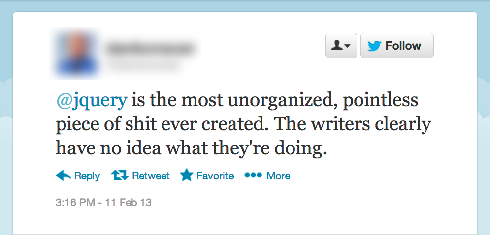
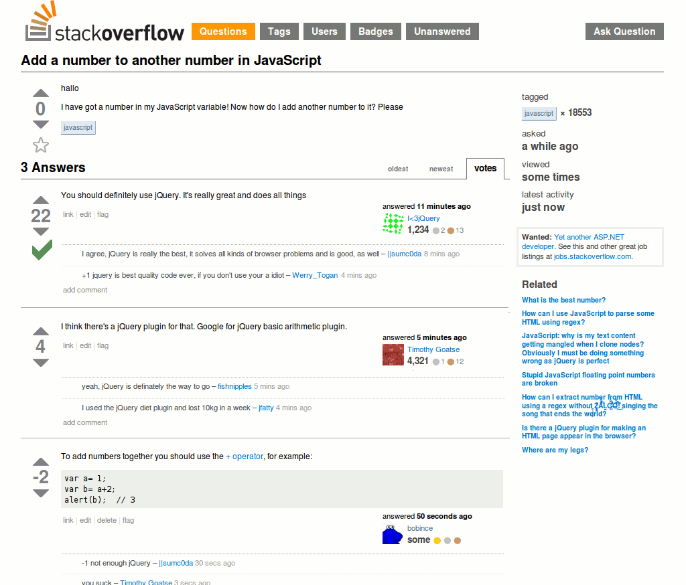
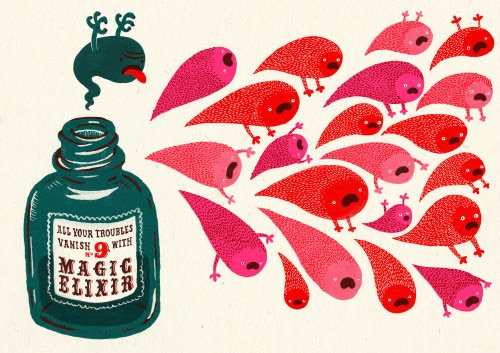
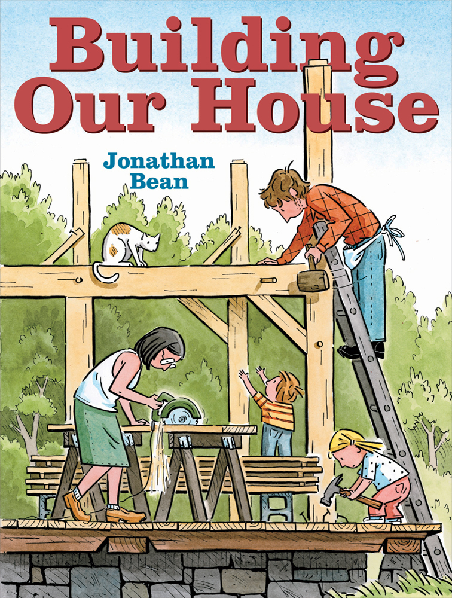
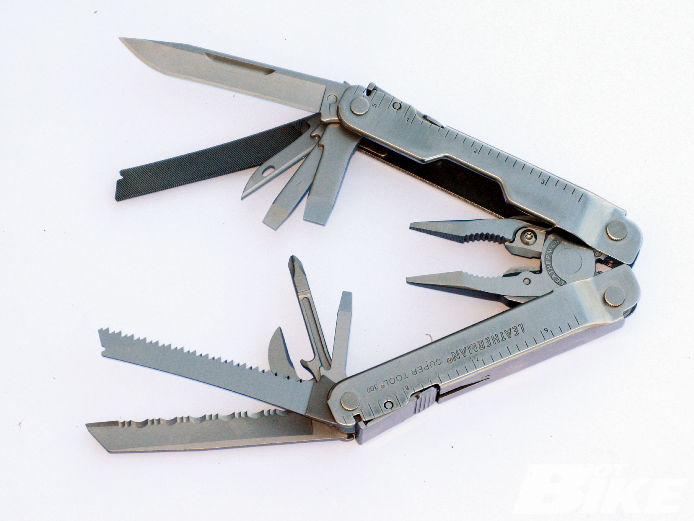
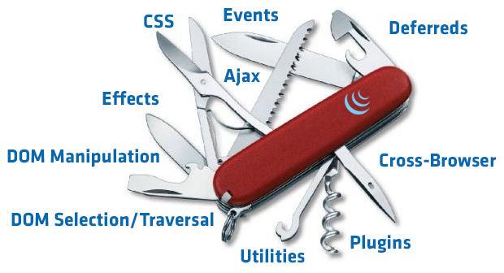
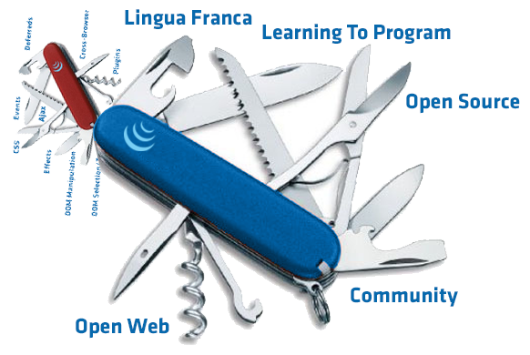
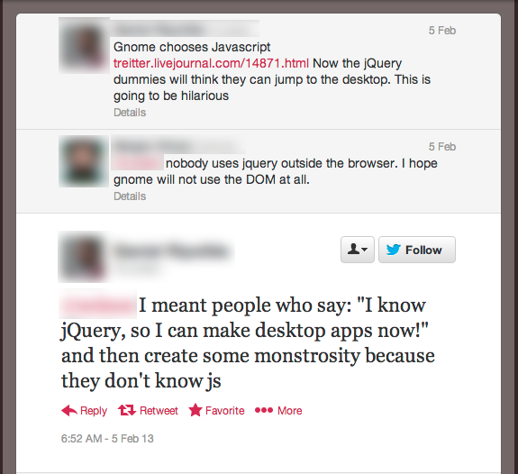
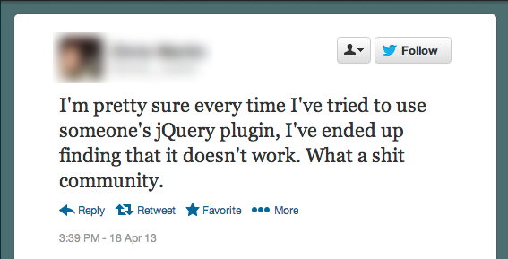

jQuery is a Swiss Army Knife (and That's OK)
adam j. sontag
jQuery UK
19 April 2013
Take it from me, jQuery is truly the greatest thing since sliced bread!
Why, I'd rather change my name to Quay Jeery than use jQuery!
Big Fan of Sandwiches:
- jQuery "changed the way" I write JavaScript
- Obscured away the "hard parts" of problems
- DOM Traversal & Manipulation
- Events
- AJAX
- Able to move away from a bunch of named global functions and `onclick=` to writing unobtrusive apps
Holder of Strong Opinions:
- "Unobtrusive? Not on my eyes!"
- Hard to maintain
- Difficult to talk about
- Disorganized
- Bloated
- Slow
- Monolithic
If you thought those were strong opinions...

...I find that hard to believe

This old chestnut is actually insidious
It promulgates a belief that:
- People who take jQuery seriously don't take JavaScript seriously
- People who take jQuery seriously shouldn't be taken seriously
- jQuery shouldn't be taken seriously
jQuery is not an elixir!

But …
jQuery is not the enemy!
jQuery is just a tool!
Building a web app is kind of like building a house
- You have to use many different tools
- You have to build the foundation before you start wiring
jQuery is a multitool
- Useful, versatile for all skill levels
- Sometimes it does the entire task
- Other times, it helps you work the other tools better
- You can't build an entire house with it!
- Well, you can, but it would be unsafe and you wouldn't want to live in it!
[Slide That Clearly References The Talk Title]
jQuery is just a global constructor with a bunch of handy static methods attached
jQuery Objects
$("div"); // Looks like a 'magic invocation'
jQuery("div"); // Looks like a good ol' function call
new jQuery("div"); // What's 'actually happening'
In all cases, you get back a jQuery object, an array-like structure that's like much sugarier version of a DOM NodeList.
All for one, one for all
jQuery unifies the experience of:
- Working with exactly 1 element as many elements
- Working new elements the same as old elements
// Next element sibling of one element with an ID
$("#onlyOne").next();
// Next element sibling of all elements with a class
$(".lots").next();
// A brand new element
$("<div>Hello World</div>");
Each of these returns an object with the same exact interface
Think of jQuery objects as a basic building block of your application
A note on DRY
It's not just about avoiding writing duplicative
code, it's about not repeating unnecessary
actions. (And jQuery() is an
action!)
Don't construct things you don't plan to use
It would be fairly strange to encounter something like the following:
JSON.parse( str ); // or new RegExp( "^"+str, "ig" ); // or isNaN( "blarg" );
because when you create things in JavaScript, you typically use a variable so you can actually use them later.
var myObj = JSON.parse( str ); // or var rDynamic = new RegExp( "^"+str, "ig" ); // or var valid = !isNaN( "blarg" );
When it comes to jQuery, people seem to forget this
JS BinAlways™ Cache Your jQuery Selections
All you're doing is calling a function with a useful return value … use it!
var $articles = $("article");
// In fact, because most jQuery methods return a jQuery object, this works as well
var $articles = $("article").click( fn );
// Once you have one collection, use it as the basis for other queries
var $img = $articles.find("img");
Don't repeat actions, even if they are "cheap"
// Bad
$("a").click(function(e) {
$(this).addClass("active");
$(this).parent().siblings().find("a").removeClass("active");
var o = $(this).offset();
});
// Better
$("a").click(function(e) {
var $t = $(this),
o = $t.offset();
$t.addClass("active");
$t.parent().siblings().find("a").removeClass("active");
});
Where Can I Save jQuery Objects
As variables:
var $friends = $(".friend");
As properties of objects:
var catApp = {
$cats: $(".cat"),
init: function() {
this.$cats.click( catClicked )
},
catClicked: function(e) {
alert("'Meow', said " + $(e.target).data("name") );
}
};
Caching selectors can make your app faster, but more importantly, it makes it better organized and easier to talk about!
jQuery is JavaScript, but so is JavaScript
Hey, who you callin' an idiom?
- There are often idiomatic patterns for common jQuery use cases
- However, there are also native JS or DOM solutions as well
- Don't use jQuery for everything just because it's there
$("a").click(function(e) {
// Bad
var id = $(this).attr("id");
// Good
var id = this.id;
});
Don't waste time looking for "The jQuery Equivalent" of Math.round, parseInt, etc. — you've already found it.

The stereotypical "jQuery Application" with lots of anonymous functions, "anonymous" collections, and a heavy dependence on selectors can quickly devolve into a Choose Your Own Adventure Story About The DOM with no beginning, middle, or end.
The DOM is not your application, it is the visible manifestation of your application.
Put up the walls of your house before you try to paint them.
But I'm building something bigger than a house!
You need bigger blocks!
MVC Frameworks like Backbone, Ember, Angular, CanJS all build on top of jQuery, letting you build the larger, application-centric pieces while they take care of fiddling with the DOM, sending Ajax requests, and so forth.
Yo dawg, I herd you like Swiss Army Knives
jQuery: My Gateway Drug
- I studied THEATRE
- Knew HTML and CSS, but JavaScript wasn't clicking for me
- Then I found jQuery – and the jQuery community – and the light went on
- I'm certainly not the only person to whom this has happened!
- Oscar Godson - jQuery made me become a programmer
SO SHIT LIKE THIS MAKES ME FURIOUS
"The jQuery Dummies"
- This is like not wanting people to learn English because you're worried they'll write mediocre poetry
- The web and JavaScript are broadly accessible; millions and millions of people have used jQuery
- Some of them are going to write bad code (sorry?), but (hopefully) everyone is on a journey
- Making fun of people for not knowing something you also didn't know once is really stupid
- A lot of people have gone onto "bigger and better things" from humble beginnings learning jQuery – that's really awesome
There are a lot of dumb and painful mistakes you can make with a pocketknife. It's not the knife's fault (usually).
Open Source Engagement
- Much like programming itself, learning the mechanics of open source can be intimidating
- In addition to code, we've open sourced all of our library documentation and site design
- New contribution hub explains how it all works: contribute.jquery.org
- Providing opportunities for people to be effective and make contributions while learning how to use git, GitHub, etc., while simultaneously meeting and collaborating with the people who work in various aspects of the project every day
THE SOFTWARE IS PROVIDED "AS IS"
We're All In This Together
- jQuery happens every day online, and regularly in person
- Relationships that go beyond code improve code
- Supporting the community is an investment that keeps jQuery growing
- Conferences, Developer Summits create a two-way flow of ideas and contributors
- Structure of jQuery Team has changed markedly since the beginning of Foundation – anyone who contributes regularly is invited to join
- Rising tide lifts all boats
Collaborating To Work On The Web
We don't just work on jQuery
- Heavy influence on
querySelectorAll - jQuery Foundation is a member of ECMA and W3C, working on the future of JavaScript and the Open Web platform
- Pointer events, XHR
- Bringing the web developer's perspective to the standards process
[Meaningful concluding quote]
Thanks!
- adam j. sontag
- adam dot sontag at jquery dot com
- @ajpiano
- I'm ajpiano on the #jquery channels on freenode IRC
- Bocoup
- my blog